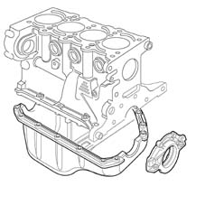

INTRODUCTION - CRANKCASE SUMP AND COVERS
- Path
- Descriptions > 10 ENGINE > 1020 CRANKCASE SUMP AND COVERS > INTRODUCTION - CRANKCASE SUMP AND COVERS
- Kind
- system description
- Applies to
- engines: 1.4 8v; all production periods
- Interactive page
- https://sloeber94.github.io/elrnDB-fDbl/en/#/223000206
Applies to: engines: 1.4 8v; all production periods
CONSTRUCTION SPECIFICATIONS
The sump, made from pressed steel, has the task of containing the engine lubrication oil and includes the oil drainage opening and plug. A bead of silicon sealant produces the seal with the crankcase.
The timing and flywheel side covers guarantee the seal on the crankshaft and are secured to the crankcase by bolts.
